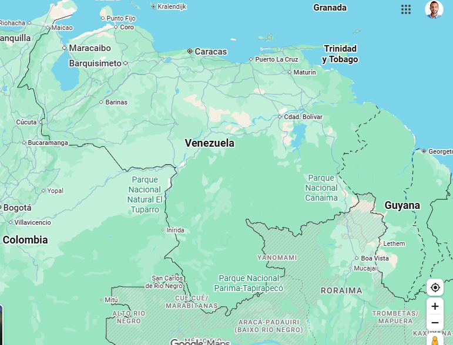

El PAÍS es Venezuela: todo el territorio nacional con sus fronteras.
En el mapa usamos cuadrícula 16×16. Números = columnas; letras = filas.
En el mapa: marca el contorno del Estado Mérida, colorea clarito los módulos que lo cubren y nombra a los estados vecinos.
Países vecinos de Venezuela: Colombia (oeste), Brasil (sur), Guyana (este).
1. ¿Qué representa este mapa?
2. ¿Cuántas columnas tiene la cuadrícula?
3. El Lago de Maracaibo queda al… del Estado Mérida
4. ¿Qué país está al oeste de Venezuela?
5. Estado vecino al norte de Mérida:
6. Estado vecino al este de Mérida:
7. En el mapa, colorea los módulos del Estado Mérida. Módulos: ______
8. ¿Guyana es vecina de Venezuela?
9. El código 3e significa…
10. Brasil está al… de Venezuela
11. ¿Cuál NO es estado vecino de Mérida?
12. El hito cerca de Mérida en este mapa es…
